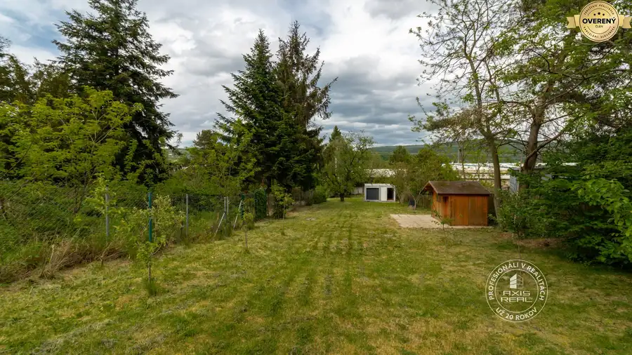
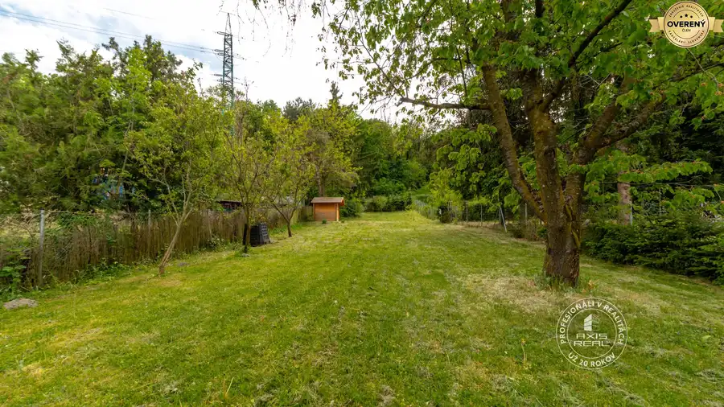
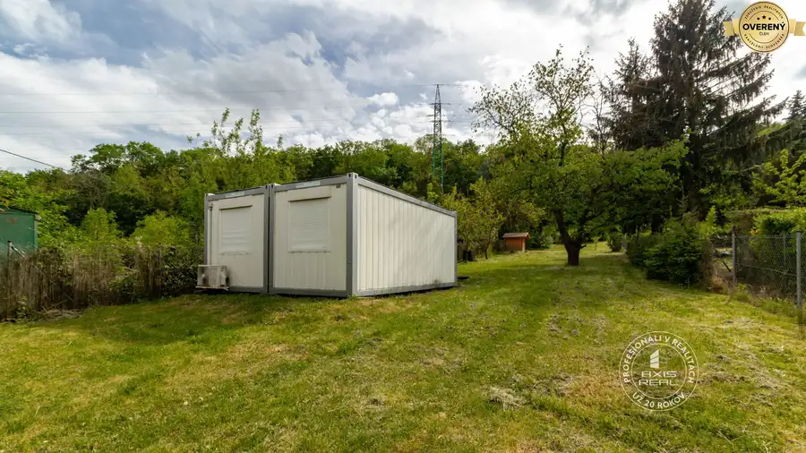
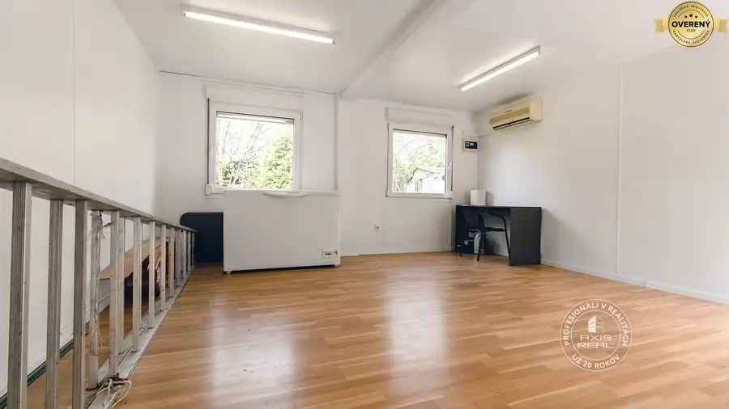
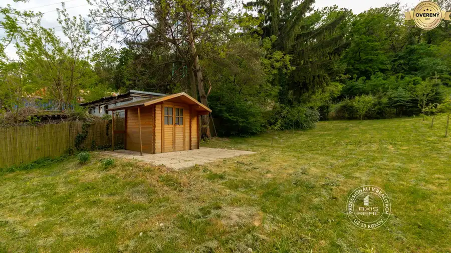
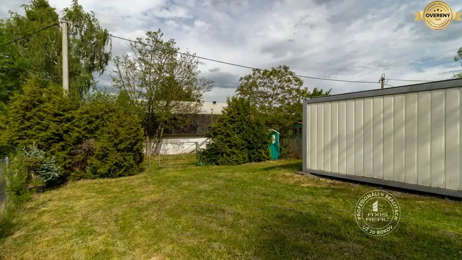
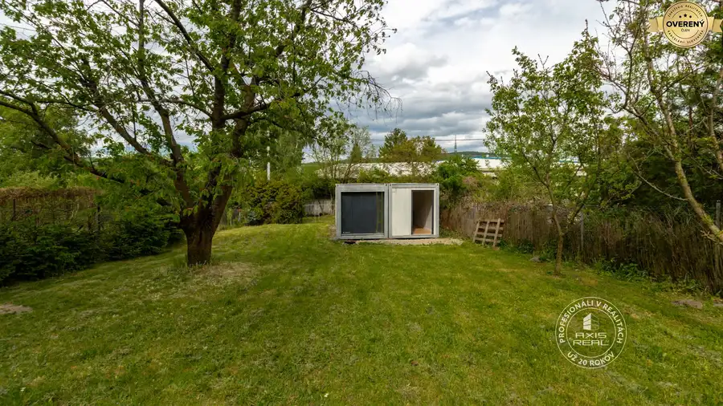

Slnečná záhrada 901 m² s chatkou, Dúbravka – Polianky
Dúbravka, Bratislava








- Plocha901 m²
- Poschodie0.
O nehnuteľnosti
POPIS POZEMKU:
Realitná kancelária AXIS REAL ponúka na predaj udržiavanú ZÁHRADU so záhradnou chatkou a domčekom na náradie nachádzajúcu sa v atraktívnej lokalite Bratislava IV – Dúbravka (Polianky), ulica Pod brehmi.
Celková výmera pozemku je 901 m2, pričom šírka pri vstupe je 13,5 m a smerom nahor sa mierne zužuje na cca 11,5 m2.
Záhrada je slnečná, mierne svahovitá a pravidelne udržiavaná. Nachádzajú sa tu ovocné stromy (marhule, čerešne, jablone, oskoruša...) aj drobné ovocie (maliny, ríbezle), čo vytvára príjemné prostredie na oddych aj pestovanie.
V dolnej časti záhrady je situovaná záhradná chatka (unimobunka) s úžitkovou plochou cca 30 m2, ktorá prešla rekonštrukciou. Je vybavená dvomi oknami s vonkajšími roletami, plávajúcou podlahou a je do nej zavedená elektrina. Vo vyššej časti sa nachádza menší drevený domček na náradie (cca 4 m2).
Na pozemku je k dispozícii elektrická prípojka (230 V aj 400 V).
Nehnuteľnosť je ideálna na rekreačné využitie, oddych alebo záhradkárčenie.
Podľa územnoplánovacej informácie (ÚPI, kód regulácie 1130) je možné pozemok využiť aj širšie – napríklad pre stavby individuálnej rekreácie, zariadenia obchodu alebo služieb, pričom v obmedzenom rozsahu sú prístupné aj byty v objektoch inej funkcie.
VÝHODY:
❶ Atraktívna a pokojná lokalita Dúbravka – Polianky
❷ Slnečný a udržiavaný pozemok s príjemnou atmosférou a veľkorysou výmerou (901 m²)
❸ Vysadené ovocné stromy a kríky – okamžité využitie bez ďalších investícií
❹ Zrekonštruovaná záhradná chatka s elektrinou (230 V aj 400 V) a praktický domček na náradie
❺ Široké možnosti využitia podľa ÚPI (rekreácia, služby, obmedzene aj bývanie)
LOKALITA:
Záhrada sa nachádza v obľúbenej a vyhľadávanej časti Bratislava – Dúbravka, v pokojnej záhradkárskej oblasti Polianky, na ulici Pod brehmi. Táto lokalita je známa množstvom zelene a príjemnou komunitnou atmosférou.
Pozemok ponúka ideálne spojenie súkromia a dostupnosti mesta – v krátkej vzdialenosti sa nachádza kompletná občianska vybavenosť mestskej časti Dúbravka (obchody, služby, reštaurácie, zdravotné strediská). Lokalita má zároveň dobré dopravné napojenie do centra mesta aj na diaľničný obchvat.
Veľkou výhodou je blízkosť prírody – okolie ponúka množstvo možností na relax, prechádzky či cykloturistiku, napríklad v lesoch Malých Karpát. Lokalita je preto ideálna pre tých, ktorí hľadajú pokojné miesto na oddych mimo ruchu mesta, no zároveň s rýchlou dostupnosťou do jeho centra.
Máte záujem o viac informácií alebo si chcete nehnuteľnosť pozrieť osobne? Kontaktujte ma a rada Vám zodpoviem všetky otázky a dohodnem termín obhliadky.
RNDr. Anna Capková | |
/ ZÁHRADA / PREDAJ / BRATISLAVA IV DÚBRAVKA / POLIANKY / ULICA POD BREHMI /
© Text a fotografie sú autorským dielom a vlastníctvom realitnej kancelárie Axis real.
Parametre
- Rozloha pozemku
- 901 m²
- Poschodie
- prízemie
- Status
- aktívne
- El. napätie
- 230/400V
- Orientácia
- východná
- Terén
- mierny svah
- Prístupová cesta
- asfaltová cesta
- Dátum zverejnenia
- 2026-07-23